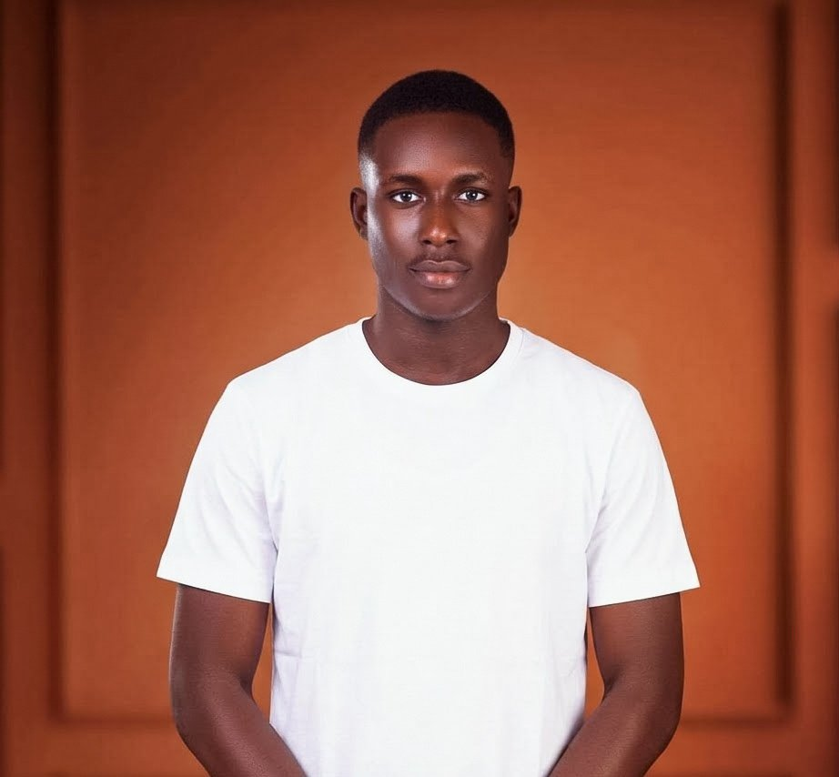

Victory Azogor
Architect, cinematographer, backend developer and writer, based in Calabar, Nigeria.

- Name
- Victory Azogor
- Work
- Architecture, cinematography, backend development, writing
- Based in
- Calabar, Nigeria
- Education
- BTech Architecture, University of Cross River State
- Open to
- Freelance projects and creative collaborations
About
I'm Victory Azogor, an architect and multidisciplinary creative in Calabar. I trained in Architecture and worked as Site Architect/Manager at Hillsmasters, a construction company, taking projects from design to site.
Alongside architecture, I shoot and edit video, build backend and web projects on Linux, and write screenplays and fiction rooted in Nigerian life.
What I do
Architecture
BTech in Architecture from the University of Cross River State. Site Architect/Manager at Hillsmasters, 2024 to 2025.
Cinematography
Shooting and editing video, with sound engineering. Moving into video production and filmmaking.
Backend and Linux
Linux system administration, working toward RHCSA certification, and web projects built for brands.
Writing
Screenplays and literary fiction set in Nigeria, drawing on Igbo and Urhobo traditions.